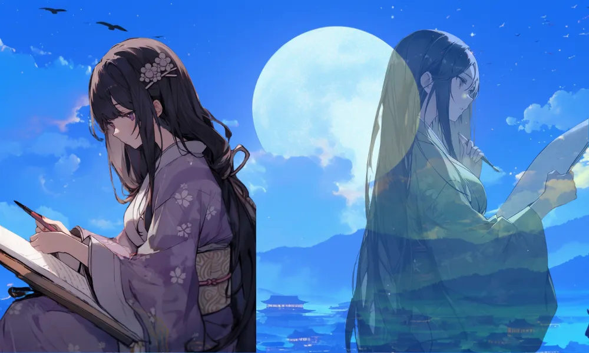

紫式部
内気な天才作家
月明かり
「夜半の月」の下で月明かりの下で執筆している様子をイメージ。
束ねた黒髪
ロングヘアーは平安時代の美人の条件。執筆の邪魔にならないように束ねた姿をイメージ。


[人物プロフィール]
生没年
970年（～978年）～1014年（～1031年）
時代
970年（～978年）～1014年（～1031年）
身分
作家・芸術家

『源氏物語』を書いた時、夜中にこっそり書いてたんだって。

 紫式部ってどんなひと？
紫式部ってどんなひと？
平安時代の女流作家で、『源氏物語』の著者です。この作品は、日本文学の傑作とされ、多くの人々に影響を与えました。紫式部の洞察力と物語の技巧は、今もなお称賛されています。
コラム
（カード右上）めぐりあひて 見しやそれとも わかぬ間に 雲がくれにし 夜半の月かな
カードの効果解説！
源氏物語執筆
「源氏物語」は、平安時代の女流作家、紫式部が書いた物語です。主人公の光源氏の恋愛や政治のドラマを描いています。紫式部の豊かな表現力と細やかな感情描写は、今も世界中で評価されています。

清少納言のライバル
清少納言のライバルは、平安時代の女流作家、紫式部です。紫式部は「源氏物語」を書き、宮廷の生活や恋愛を描きました。彼女の作品は、清少納言と並んで平安文学の最高峰とされています。

弥生時代ってどんな時代？
弥生時代ってこんな時代 ってのをなんとなく。時代かぶってたりしたら関連人物 との繋がりについて纏める感 じで。弥生時代ってこんな時代 ってのをなんとなく。時代かぶってたりしたら関連人物 との繋がりについて纏める感 じで。


クイズ！：紫式部が書いた日本文学の傑作はなんでしょう？